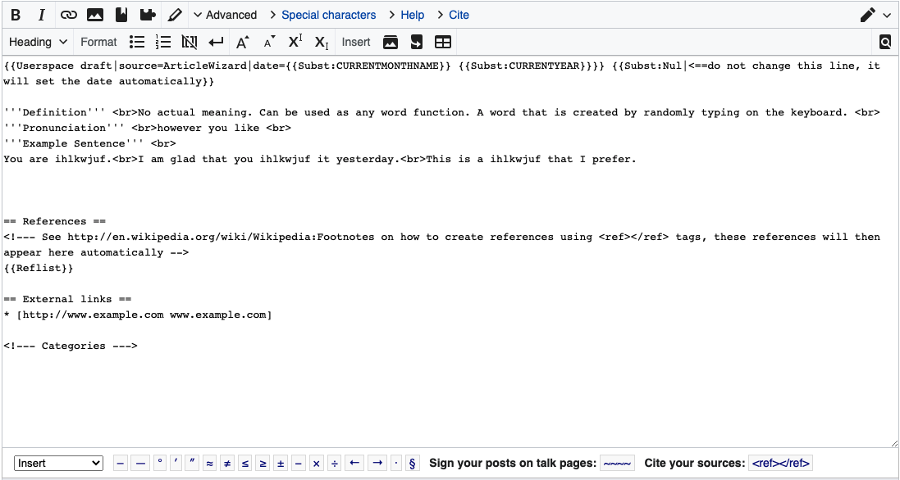
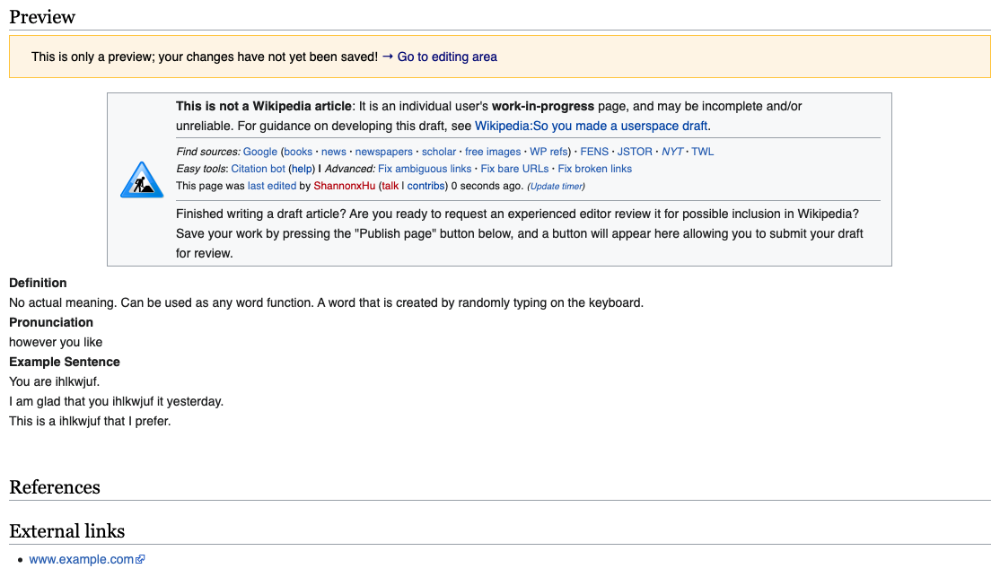
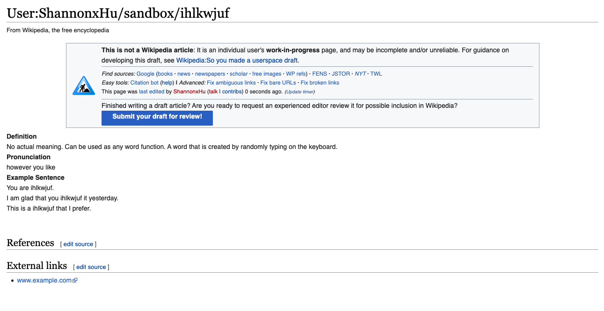

I chose Wikipedia as the platform for web intervention.
As a site that is a collection of shared knowledge, Wikipedia is assumed to be trustworthy when it comes to information sourcing.
I wanted to do an intervention that questions this assumption. So I created a wiki page for the word"ihlkwjuf".
It is merely a word that I randomly typed in and it does not have any meaning.
The page is an intervention addressing the idea that we should be critical when browsing Wikipedia, since the editors can be anyone.



Although it has a warning on the page indicating that this is not a Wikipedia article, I still successfully published the contents.
And it is now an active
site
(Not sure when it will be taken down)